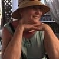
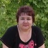

Hypertenze, ucpané cévy a bolesti srdce způsobují předčasnou
smrt. Jak se tomu dá zabránit?
Michal Dlouhý
01.06.2022
Každý ví, že krevní tlak, mrtvice a infarkty jsou důsledkem
cév s vysokým obsahem cholesterolu. Málokdo si však uvědomuje, že to je jen špička
ledovce. "Ucpané" cévy jsou příčinou 9 z 10 chronických, téměř
smrtelných onemocnění.
Hypertenze je patologický stav, který postihuje každého třetího
dospělého člověka v České republice, přičemž většina lidí o tomto problému
neví, a proto nepodniká žádné kroky. A mnozí z těch, kteří si jsou vědomi
své patologie, chybují v léčbě: užívají léky nepravidelně nebo vůbec, v
příliš nízkých dávkách apod. Bohužel dlouholetá nevhodná kontrola
krevního tlaku může mít negativní vliv na kardiovaskulární a ledvinové
funkce a způsobit řadu zdravotních a život ohrožujících komplikací.
Co by měli lidé s hypertenzí vědět?
Proč tvoří cévy 85 % našeho zdraví?
Co kromě cholesterolu může ještě ucpávat cévy?
4 zjevné a 7 dalších skrytých příznaků špatného stavu
cév
Jak si doma bezpečně vyčistit cévy?
Na tyto otázky odpověděl přednosta Kliniky plicního krevního
oběhu, tromboembolie a kardiologie Evropského centra zdraví v Praze. V letech 2004-2007
byl ředitelem České kardiologické společnosti. Viceprezident Evropské
kardiologické společnosti, odborník Karel Novotný.
Michal Dlouhý: Pane Novotný, vždycky
říkáte, že cévy tvoří 85 % zdraví těla? Proč tomu tak je?
Jaký je největší orgán v lidském těle? Málokdo to ví.
Moji studenti také často dělají chyby. Nejčastěji se hovoří o mozku a játrech. Ti
nejvzdělanější řeknou, že je to kůže. Ve skutečnosti je největším orgánem náš
oběhový systém. Cévy nejsou jen trubice, kterými proudí krev. Je to
složitý a jedinečný orgán, jehož zničení nevyhnutelně končí utrpením.
Špatný krevní oběh v nohách - křečové
žíly, neustálé otoky a tíha nohou, pocit chladu nebo nesnesitelného
pálení. Prasklé paty. Špatný krevní oběh znamená nedostatečnou ochranu
před bakteriemi, a tedy i před plísněmi. Nehty jsou silnější a delší.
Ucpané cévy, které vyživují játra,
způsobují hepatitidu. Hořká chuť v ústech. Hořká pachuť po konzumaci
tučných jídel.
Oslabené a ucpané cévy v kloubech vedou k suché chrupavce. Vrzají a bolí klouby, vzniká osteochondróza a
objevují se kýly.
Při oslabení cév v konečníku se objeví
fialové hemoroidy.
Pokud jsou cévy špatné, dochází k poškození zraku,
rozmazanému pohledu a efektu létajícího komára.
Vzniká šedý zákal. Červené oko, které si často spojujeme s únavou, je ve
skutečnosti mikrokrvácení - prasknutí malých kapilár v oku. A královnou
cévních patologií je samozřejmě Její Veličenstvo hypertenze. A hypertenze je zase
matkou mrtvice a sestrou infarktu.
K větě "štěstí závisí na zdraví" byste mohli
přidat "a zdraví závisí na čistých cévách".
"Ucpané" cévy vedou k vyhladovění všech orgánů.
Například nadváha úzce souvisí s cévami.
Jídlo plné cholesterolu způsobuje hladovění orgánů a cévy jim nemohou
dodávat dostatek živin. Tímto způsobem mozek vysílá signály o potřebě
jídla. A člověk jí. Naše orgány však nedostávají správné
množství živin kvůli ucpaným cévám. A mozek nám vyšle signál, abychom
znovu jedli. Tento proces se neustále opakuje.
To vede k neustálé potřebě jíst, chuti na sladké a tuky,
protože tělo potřebuje kalorie.
Když kolegové říkají lidem "máte vysoký krevní tlak,
protože máte nadváhu", špatně chápou příčinu problému. Hypertenze
není způsobena nadváhou. Příčinou nadváhy je však hypertenze.
Proto nikdy nepřestanu opakovat: pokud chcete žít naplno, vyčistěte a obnovte
své cévy. Čisté cévy jsou klíčem ke zbavení se 90 % chronických
onemocnění, z nichž některá jsou považována za
"nevyléčitelná".
"Pokud je normální lumen cévy silný jako prst, pak 5
kg cholesterolových plaků zmenší lumen na tloušťku asi 4 zápalek.”
Michal Novotný: Každý ví, že
cholesterol je špatný. Je to ten, který ucpává naše cévy, zužuje průtok
krve a zhoršuje krevní oběh. Je však jediným viníkem?
Přesně tak. Cholesterolové pláty, známé také jako
"aterosklerotické pláty", jsou příčinou přibližně 60-70 % ucpání
cév.
Ve věku 50 let se v cévách nahromadí až 5 kg cholesterolových
plaků. Hromadění cholesterolu zužuje průtok v cévách 4-5krát.
5 kg celkové hmotnosti nahromaděné v nádobách ve věku 50 let
CHOLESTERIN
TROMBOTICKÁ HMOTA
KALCIFIKACE
Cholesterolové plaky nejsou život ohrožující. Ano, snižují kvalitu
života, zvyšují krevní tlak, způsobují bolesti hlavy a kloubů, způsobují slabost a
apatii. Mnohem nebezpečnější jsou však krevní sraženiny, které se rovněž hromadí v
cévách.
Krevní sraženiny se hromadí méně, "jen" asi 800 g - 1 000 g.
Nebezpečí však spočívá v jejich nestabilitě. Krevní sraženina (trombus) se může kdykoli
utrhnout a vydat se hledat "oběť".
Pokud je sraženina dostatečně velká, pevně
"ucpe" cévu oběti. Vzniká ischémie - úplné přerušení přívodu krve do orgánu, který cévu
vyživuje.
Ischemická cévní mozková příhoda je ucpání cévy v mozku. Инфаркт - это
закупорка сердечной артерии. Jaterní ischemie, pneumotorax, selhání ledvin. Hemoroidy
jsou vlastně ischemií cév konečníku. Ucpání i malých cév na nohou nakonec vede k nekróze
- gangréně.
Kalcifikace cév je způsobena zbytky chemických látek a
potravinářských přísad. Do 50 let věku se nahromadí asi 300-400 gramů. Většina
kalcifikací se vyskytuje v mozkových cévách.
Kalcifikace je nebezpečná kvůli své
krystalické a ostré struktuře. Pokud je zúžení cévy výrazné, způsobí křeč cévy způsobená
stresem, cvičením nebo změnou počasí, že ostrý úlomek krystalu prorazí cévu a způsobí
její prasknutí. A prasklé mozkové cévy vedou k hemoragické mrtvici.
4 zjevné a 7 skrytých příznaků, které ukazují na
abnormality krevních cév
Pokud je vám více než 45 let a nikdy jste neužívali nutraceutika na
pročištění cév, zaručuji vám, že máte problém.
Ucpávání cév cholesterolem, tvorba krevních sraženin a
kalcifikace jsou přirozené procesy stárnutí. Potraviny, léky, kouření a alkohol
v dnešní době zřejmě urychlují proces "ucpávání" 5-8krát. Ale
všichni jsme lidé a je zbytečné skrývat, že svět, ve kterém žijeme, je
takový.
Pokud vám byl diagnostikován hypertenze, nemusíte mě ani poslouchat.
Vysoký krevní tlak je královnou problematických cév.
Trpíte výkyvy tlaku? Je neustále vysoká a musíte užívat
tablety? V nejlepším případě si tedy céva zachovala 30 % svého lumen. Zbytek je
hustě pokrytý cholesterolovými plaky, krevními sraženinami a
zvápenatělý.
Proto sebemenší stres, změny počasí a magnetické bouře okamžitě
ovlivní vaše pocity. Zvyšuje se vám krevní tlak, v hlavě vám hučí a klouby
vrzají.
4 abnormality způsobené ucpáním cév:
1. "Hypertenze"
Nestabilní nebo vysoký
krevní tlak, který je třeba snížit pomocí asistenčních
zařízení. To je hlavní a nejdůležitější ukazatel. Byla vám
diagnostikována hypertenze? Cévy vám tedy říkají: "Potřebujeme
očistu!"
2. Křečové žíly
Děsivé vystouplé žíly na
nohou, tíha a bolest, otoky. Cholesterol a krevní sraženiny
"ucpávají" žíly. Postupně se objevují pavoučkovité žilky,
které se nakonec změní v teleangiektázie. A teleangiektázie se pak mění
v křečové žíly.
3. Hemoroidy
Při ucpání cév v konečníku
dochází k jejich zvětšení. Pokud dojde k ucpání cév, kterými
proudí krev, vznikne anální trhlina.
4. Osteochondróza
Jedná se o nedostatečné
prokrvení chrupavky. Chrupavka vysychá a začíná se opotřebovávat a
nedokáže se včas zregenerovat. Neobnovuje se a vysychá. Ztrácí schopnost
podpory. Soli nejsou vyloučeny a začnou se nekontrolovaně hromadit a vytvářet
"vdovský hrb".
7 varovných příznaků:
1. Otoky
Ucpané cévy nemají čas odvádět tekutiny.
Narušují rovnováhu vody a elektrolytů. Večer mi otékají nohy a kotníky
mám v těsných ponožkách. Oteklý obličej a váčky pod očima. Prsteny
nelze z prstů sundat. Oteklé břicho ukazuje na otok vnitřních orgánů.
2. Tinnitus
Od sotva slyšitelného zvuku až po hlasité
zvonění nebo bzučení, které narušuje soustředění. Jedná se o
následky zvýšeného tlaku mozkových cév, které tlačí na
ušní bubínek.
3. Závratě
Pocit opojení a náhlé záchvaty
závratí naznačují, že cévy "hladoví". Často je také
postižen sluch
4. Nespavost
Cítíte se ospalí a nemůžete usnout, když
jdete spát po půlnoci? Příčinou je nedostatečné prokrvení hypofýzy.
Přestane produkovat melatonin, spánkový hormon.
5. Únava
Bezmocnost. Nechcete dělat nic. Chce se vám jen
ležet a jíst. Tento pocit je způsoben tím, že tělo přechází do
úsporného režimu. Orgány nedostávají dostatek živin přes ucpané
cévy a tělo se snaží snížit úroveň aktivity, aby neodumřelo.
6. "Problémy se zrakem"
Pocit
létajících komárů, rozmazané vidění. Jedná se o příznaky
oční cévní nedostatečnosti.
7. Bolest kloubů
Změny počasí způsobují bolest a
křupání v kloubech. Když se ráno probudíte, necítíte se vzhůru a
odpočatí, ale otupělí a téměř ochromení. Uvolnění ztuhlých kloubů
po spánku nějakou dobu trvá. Synoviální tekutina ztrácí své
vlastnosti a lepí klouby jako těsto.
Častěji se u lidí vyskytuje více příznaků najednou. Máte alespoň jedno z těchto
znamení? Cévy jsou zoufale v pohotovosti, potřebují vyčistit a vyživit.
Vyčerpaní se snaží bojovat s každou patologií zvlášť. Tablety na hypertenzi,
masti na křečové žíly, čípky na hemoroidy, gely na osteochondrózu. A samozřejmě
spousta léků proti bolesti.
Utrácejí peníze, aby uživily farmaceutický byznys. Příčina všech abnormalit
je totiž stejná: poruchy krevního oběhu. A musíte začít s celkovou očistou
cév.
"Většina farmaceutických léků nepomáhá ani
neobnovuje, ale oslabuje a škodí. ”
Michal Dlouhý: Pane Novotný, jaký
je nejúčinnější způsob čištění cév od cholesterolu, krevních sraženin a
odvápnění?
Pro bezpečné čištění cév mohu doporučit jednoduchý produkt
s bezvadnou pověstí - . Prodlužuje život o 12-17 let,
naplňuje ho energií a pocitem uvolnění namísto utrpení a ztráty vitality.
Je stejně bezpečný jako bylinný čaj. A je to druhý
nejúčinnější lék po chirurgickém vyčištění cév - stentování. Na
rozdíl od operace však nemá žádné komplikace ani vedlejší účinky.
Příjmový cyklus čistí všechny cévy v těle. Od velkých, silných tepen až po
menší, tenčí kapiláry.
je 100% přírodní produkt na bázi
rostlinných výtažků, který při kontaktu s vodou probouzí živé molekuly. Tito
malí "čističi" odstraňují cholesterolový hlen z cév, krevní
sraženiny, které ulpívají na stěnách, kalcifikace - zbytky léčiv. Cokoli, co
narušuje normální průtok krve. Po maximálně 1,5 až 2 měsících pravidelného
používání zničí všechny škodlivé směsi
nahromaděné v průběhu let a otravující váš život.
Bolest hlavy zmizí a s ní i hučení v uších. Mozek, který
dostává dostatek živin čistými cévami, začne pracovat rychlostí
superpočítače. Myšlenky jsou jasné a přesné.
Zlepšuje se sluch, slyšíte příjemné zvuky, které
jste dříve nevnímali. Zlepšení sluchu je tak výrazné, že můžete slyšet i
tichý rozhovor ve vedlejší místnosti.
Vůně jsou intenzivnější. Mizí ucpaný nos,
chronická rýma a alergie. Průdušky se zotavují. Dýchání je volné a
plynulé. Čerstvý vzduch vám naplní plíce, rozlévá se po těle v
příjemných vlnách a vyvolává pocit lehké euforie.
Chuť se stává intenzivní a rozmanitou. Obyčejné
jídlo je mimořádně syté. Sníte méně a získáte více. Zmizí
neustálá chuť na sladké a tuky.
Vaše klouby vám "děkují", už vás nebolí.
Křupání kloubů zcela zmizí, pohyby se stanou plynulými díky obnovené
hydrataci kloubů. Je to jako výměna oleje v motoru, kdy se černá, špinavá kapalina
obsahující kovové piliny nahradí čerstvým, čistým olejem, který
zajistí dokonalou přilnavost.
Michal Novotný: To je působivé. Abych
řekl pravdu, o Topece slyším poprvé. Slyšela jsem však o nutraceutikách obecně. V
Japonsku a Izraeli jsou nutraceutika oficiálně uznávána jako preferovaná
léčba. A v České republice těmto výrobkům stále nevěří. Proč?
Dovolte mi, abych vám vyprávěl varovný příběh o nedůvěře. V roce
1928 bylo objeveno první penicilinové antibiotikum. Snadno odstranil
úplavici a tyfus, na které lidé nevyhnutelně umírali.
Většina lidí však nevěřila, že by to mohlo pomoci, protože se tisíckrát
zklamali při pokusech o uzdravení. Ti, kteří se tisíckrát zklamali a nebáli se
zkusit to po tisící, získali zpět svou sílu. A ti, kteří to vzdali, pokrčili
rameny a řekli: "Další zázračný produkt, který nefunguje", se nepovedl, i
když spása byla blízko.
Stejně jako kdysi penicilin porazil tehdejší nemoci: úplavici, tyfus a
plicní mor. časem odstraní cévní
abnormality. První kroky již byly učiněny - Německo, Japonsko, Kanada, Korea,
Švýcarsko a Izrael přijaly zákony o očistě cév pomocí nutraceutik namísto
farmakoterapie.
"Naše pochybnosti nás podrážejí, kvůli nim
propásneme mnoho příležitostí ze strachu z pokusu.”
V České republice je oficiálně registrován
pouze na jednom místě - na soukromé klinice v Praze. Nabízejí pomoc VIP osobám
z politiky, showbyznysu a dalším elitám. Byly zde přijaty izraelské léčebné
protokoly a předpisy našeho ministerstva zdravotnictví se na ně nevztahují. Lidé tak
získají výsledky namísto nekonečného procesu.
Zbytek našich občanů si může koupit syntetické léky vyráběné
velkými farmaceutickými společnostmi, které vlastní elita.
Užívání u po dobu 2 měsíců je stejné jako
znovuzrození.
Michal Dlouhý: Také věřím, že
pochybnosti jsou naším největším nepřítelem, takže se nebojím vyzkoušet něco
nového. Představme si, že si vezmu balení u a otevřu ho. Co bude dál? Jak to
funguje?
S kapalinou a kyslíkem získávají prospěšné výtažky
účinek peroxidu vodíku a okysličují se.
Molekuly u jsou malé kyslíkové bomby. Zrušují usazeniny
cholesterolu v cévách a umožňují volný průtok krve.
je označován za "čistič cev". To velmi
přesně vystihuje jeho podstatu.
Proto je tak účinný: užíváte živé
výtažky, které jsou aktivní. Zatímco produkty z lékárny vám poskytnou
pouze pasivní a sterilizované " kostrové" receptury.
Složení u zajišťuje okamžitou absorpci živých částic. Extrakty
obohacené kyslíkem se snadno vstřebávají do stěn jícnu. proto nezpůsobuje pálení žáhy, hořkost v ústech,
zápach z úst, nedráždí střeva a chrání žaludek. mohou bezpečně
užívat i lidé s vředy.
" je pokladnicí vzácných
extraktů, které harmonicky čistí a posilují cévy.”
UVOLŇUJE " PRŮCHODY"
Extrakt z olivových listů - normalizuje hladinu cholesterolu v krvi, zabraňuje rozvoji aterosklerózy. Pomáhá předcházet tvorbě arteriálního plaku a snižuje riziko srdečního infarktu a mrtvice.
Otok zmizí. Nohy mi neotékají ani po celodenním chození.
Obnoví se prokrvení kůže - hvězdičky a teleangiektázie zmizí. Křečové žíly
se postupně zmenšují a hemoroidy se obnovují.
MĚNÍ NA ENERGII
Extrakt z Gymnémy lesní – snižuje krevní tlak, zmírňuje podrážděnost a únavu, chrání před arytmiemi.
odstraňuje dvě mouchy jednou ranou - odstraňuje
cholesterol, který ucpává cévy, a stimuluje správné spalování
tuků. To vám dodá příval energie, pocítíte nutkání k pohybu, vaše oči
ožijí a pocítíte touhu " přesouvat hory".
SNIŽUJE KŘEMÍKY
Chrom - pomáhá udržovat hladinu cukru v krvi v normálních mezích a také zajišťuje zdravé složení tělesných tkání.
POMÁHÁ SRDCI
Vitamin C - zlepšuje pevnost cév, normalizuje metabolismus cholesterolu, příznivě působí na endokrinní a nervový systém.
Mé srdce si úlevně povzdechne, jako by z něj byl odstraněn pytel cementu.
Tepová frekvence se zpomalí a stane se pravidelnou. Arytmie a tachykardie již nejsou
problémem. Akutní mravenčení na hrudi způsobené srdeční embolií se
neopakuje a je navždy zapomenuto. Riziko infarktu se snižuje na nulu.
MOTÝLÍ EFEKT
je jako třepot motýlích křídel, který
spustí řetězovou reakci mimořádné změny. začíná
čištěním cév od nečistot nahromaděných za desítky let a krok za krokem spouští
řetězovou reakci, která čistí celé tělo.
SNADNÉ PROBUZENÍ
Ráno se probudíte a snadno vstanete z postele - nemusíte se
namáhat, abyste vstali, natáhli si nohy a prokrvili záda a krk.
Ráno je tělo plné energie a síly, protože cévy byly zcela vyčištěny
a všechny orgány dostaly přes noc dostatek živin a odpočinku. Žádná část těla
není prokrvená a má dostatek energie na nový den.
CHUTNÁ SNÍDANĚ
K snídani si dáte sendvič s tlustou vrstvou másla a křupavou slaninou a
vaše játra a žaludek ho stráví. Už nemáte hořkost v ústech ani bodavou bolest v
žaludku. vyčistil cévy, které přenášejí živiny do
žaludku, takže nyní stráví i nehty.
PLNÝ SÍLY
Když vycházíte z domu, nemusíte se už starat o své nohy: chůze
vás neunavuje, můžete chodit celý den, aniž by se vám nohy unavily nebo otekly.
Sandály, boty a ponožky již nezanechávají stopy.
ABSOLUTNÍ POKOJ
Jste naprosto klidní a uvolnění. Už nemáte tu neustálou bolest,
která pohlcovala vaše vědomí a bránila vám soustředit se na něco jiného. Když
nic nebolí, známé věci, zvuky a vůně se vracejí do své
krásy.
JASNÉ MYŠLENKY
I po náročném pracovním dni se vraťte domů s čistou a soustředěnou
myslí. Váš mozek pracuje jako švýcarské hodinky, vůbec se necítíte
unavení.
HLUBOKÝ SPÁNEK
Nyní ležíte v posteli a rychle a příjemně usínáte. Pryč jsou
doby, kdy jste se půl noci vrtěli v posteli, občas převrátili polštář, ale spánek nikdy
nepřišel. Nyní je to jednoduché: vy rozhodnete, kdy usnout, a vaše tělo poslechne vaše
příkazy.
"Je to úžasný a přirozený způsob řešení různých
patologií, který pomáhá zlepšit každodenní fungování organismu. A vy
musíte najít způsob, jak ji přidat do svého života."
Deficit a program dávek
Michal Dlouhý:Pokud víme, z většiny lékáren zmizel? Proč?
Bohužel ano. již není od začátku letošního roku v lékárnách
dostupný.
Důvodem konfliktu byla chamtivost řetězce lékáren, který požadoval od výrobce
Toperinu 480 eur za každé prodané balení! Zavedením již tak vysoké marže na
cenu výrobce (cena u v některých pražských lékárnách dosahovala
několika tisíc eur) chtěli lékárníci uvalit na výrobce další
náklady.
Zástupci lékáren to zdůvodňují tím, že jim tento příplatek umožňuje
přežít. Koneckonců je produkt, který je třeba kupovat
každých 7-10 let. Navíc po vyčištění cév těmito kapslemi již člověk nepotřebuje
léky z lékárny, které používal dříve! Lidé si přestanou snižovat
krevní tlak a nebudou si kupovat léky proti bolesti. Výrazně se snižuje spotřeba
léků na astma a cukrovku. A to pro lékárny znamená finanční ztráty. To
je důvod, proč je požadována vysoká cena přípravku .
Výrobce u nakonec přestal kontaktovat všechny lékárny a začal jej distribuovat
výhradně online. V zásadě je to správné. Posuďte sami: už není třeba platit
nájemné za maloobchodní prodejny, už není třeba platit úplatky v
lékárnách. je tedy nyní součástí speciální
nabídky.
Náš ústav společně s Národním centrem kardiovaskulárního výzkumu a
výrobcem spustil v rámci projektu Telemedicína (internetová
medicína) slevový program.
si může objednat kdokoli za speciální cenu.
Michal Dlouhý: Co je nutné udělat,
abych mohl program používat?
Abyste mohli dostávat , musíte splňovat
následující podmínky.
Podmínky pro obdržení přípravku
Pouze pro osobní použití.
Pošlete svou žádost prostřednictvím oficiálního formuláře
programu.
Důvodem je boj proti spekulantům, kteří se snaží nakupovat ve velkém množství a dále ho prodávat.
Oficiální formulář žádosti je zárukou kvality a ochrany před
spekulanty.
Michal Dlouhý: Jak dlouho bude
benefiční program trvat?
Do 06.06.2022 včetně nebo do
vyčerpání zásob u. A to i přes nedostatek reklamy v rozhlase a televizi.
Lidé sdílejí informace a doporučují je rodině a přátelům. Také
nás překvapilo, že se informace o léku začaly šířit tak rychle.
Proto doporučujeme, abyste si objednali co nejdříve. V letošním roce
se již žádný takový program konat nebude.
Ke dni 06.06.2022 jich ještě
několik zbývá:
19 ks.
DISKUSE A OTÁZKY:
Růžena Nováková
Tento produkt jsem si objednala minulý měsíc. Někdy jsem
měla příliš vysoký krevní tlak a nepravidelnou srdeční frekvenci. Po 3-4
týdnech užívání tohoto léku se můj krevní tlak vrátil do
normálu. Teď se cítím mnohem lépe. Děkuji!
Iveta Tomášková
Dostala jsem balíček u, funguje to, jak
říkají! Téměř každou noc mě bolela hlava, bylo mi velmi špatně a ani
léky proti bolesti nepomáhaly. Teprve po chvíli jsem si uvědomil, že mě
bolí hlava kvůli tlaku. Ale o to nejde. mi doporučila
kamarádka, objednala jsem si ho včas v rámci slevového programu a byla jsem s
ním velmi spokojená. Za dva měsíce jsem byla jiný člověk! Uvědomil jsem
si, že dokud nevyčistím své cévy, opravdu nežiji! Žádné bolesti
hlavy, křečové žíly jsou pryč, a já jsem především zhubla 24 kg! Ze 101
kg na 77! To je to, co znamená normalizovat krevní oběh! vřele doporučuji
všem jako preventivní opatření!

Dana Pittnerová
Lidé, tip: Pokud se váš region programu
neúčastní, možná v něm máte příbuzné nebo známé?
Můžete je požádat o objednávku. Pokud se ovšem nerozhodnou ponechat si :)), podle podmínek programu si můžete objednat pouze
jedno balení na osobu.
Dominik Šimurda
Podstoupil jsem tříměsíční terapii a zaplatil
téměř 25 000 korun. Ale to bylo loni, když byl v lékárně v prodeji. A
chci říct, že toho nelituji! I když to bylo drahé, jen za poslední rok se mi
už podařilo ušetřit téměř stejnou částku, protože už nemusím kupovat
léky v lékárně. A život je o tolik jednodušší, že to za ty peníze
stojí! V 51 letech jsem si připadal jako slabý stařec. Snažil jsem se příliš
nevzdalovat od tlakoměru a vždy jsem měl po ruce prášky na tlak, o dožití důchodu
se mi ani nesnilo, hlava mi třeštila a často jsem si říkal: raději bych byl
mrtvý... Když už mluvíme o krevním tlaku, zapomněl jsem na to po 2
měsících, cítím se jako mladý a zdravý muž (pokud víte,
co tím myslím)! Takže i když ve vaší oblasti není žádný
slevový program, objednejte si bez slevy, za jakoukoli cenu - nebudete litovat!
Zdá se mi, že bude v České republice brzy
zakázán, protože otravuje mnoho firem a připravuje je o zisky.
Mária Michaličková
je nejlepším lékem. Jednoho dne jsem šla k
odborníkovi, který mi poradil, abych vyzkoušela nový přípravek (mladý odborník si zřejmě ještě myslel, že
přípravky mají lidem pomáhat, a ne vydělávat peníze!). V mém
případě fungoval po první dávce - můj krevní
tlak okamžitě klesl, ale pokračoval jsem v cyklu podle doporučení odborníka. Po
třech týdnech jsem zapomněl, co je to hypertenze. Křečové žíly, které mě
trápily 10 let, jsou pryč! Také jsem měla ženský problém a ten také
zmizel. Cítím se skvěle, jako bych byla mladá!
Gabriela Flimmelova
Děkuji! Podařilo se mi objednat balení. Zkusím to.
Pavel Bokvaj
Je to v Brně k dostání, nevíte někdo?
Jan Málek (moderátor)
Ne, bonusový program je plánován pro Brno později,
pokud se nic nezmění, bude do měst a krajů rozesláno 16 800 balení
u.
Petr Pirny
Co znamená 16 800 balení pro region? Je to jen kapka v
moři...
Tomáš Kovařík
Co jste to za lidi!!! Jako by vám někdo něco dlužil! Když jsem
si uvědomil, že potřebuji , nečekal jsem! Půjčil jsem si
peníze a koupil ji! Čekají na slevy! Jaká smůla! Styděl bych se něco
takového napsat!

Martina Nemethová
Nesuďte, pokud nechcete být souzeni! Nevíte, v jaké
situaci jsou ostatní! Možná je někdo postižený, odkud může vzít
peníze?
Hani Liberská
Matce začaly znecitlivovat prsty a spolehlivý odborník
jí poradil, aby si vyčistila cévy. Předepsal jí "statiny", ale
četla jsem, že mohou způsobit rakovinu střev, a tak jsem se rozhodla neriskovat. Pak jsem
náhodou objevila . Zakoupili jsme lék a zaplatili 1 250
korun za cyklus. Výsledky však na sebe nenechaly dlouho čekat, po několika dnech si
maminka všimla výrazného zlepšení pleti, vlasů, nehtů a celkové kondice
těla a ve druhém týdnu už jí prsty docela dobře snášely. Po 1,5
měsíci necitlivost zcela zmizela a krevní tlak se vrátil do normálu.
Cítí se skvěle, maminka získala sílu, zlepšila se jí paměť a klouby
ji přestávají bolet i za špatného počasí. Celkově je to skvělý
produkt, doporučuji ho všem!
Míša Cmíralová
Děkuji za tento komentář! Neřekla bych, že jsem z návštěv
klinik nadšená, zejména proto, že specialisté obvykle předepisují
drahé nebo "skandální" léky (vzpomínám si, že jsem v
žádné lékárně v našem městě nemohla najít
"mimořádné" oční kapky. Šok). Odborníci ne vždy
"vidí" problémy našeho těla zvenčí. Už rok mám ráno
necitlivé ruce, ale vzhledem k těmto recenzím vyzkouším . I když si nemyslím, že to bude mít vliv na
znecitlivění, vyčištění cév nebude bolet! Je to přece přírodní
produkt. Děkuji!
Kateřina Baxová
Děkuji za článek! U mě to fungovalo. Nedávno jsem měla
vysoký cholesterol a odborník mi předepsal statiny. Když mám den volna od
statinů, snažím se užívat a jeho přirozené
složení mi dodává větší důvěru.
Zuzana Pecharová
O této metodě čištění cév jsem slyšela, ale ještě
jsem ji nezkoušela. Myslím, že teď je ten správný čas to zkusit: -)
Daniela Trávníčková
Я рискнула и до сих пор не жалею об этом. Pokud máte
problémy s cévami, doporučuji ji. Žádné vedlejší účinky, jsem
spokojená s výsledky
Kateřina Šmídová
Mám vysoký cholesterol a byl mi předepsán
farmakologický lék. Nemohla jsem ho brát ani týden, otekly mi
lymfatické uzliny, zejména na krku, a nemohla jsem otočit hlavou. Navíc se mi
začal zhoršovat zrak. Po čtyřech dnech užívání se mi v očích objevil
jakýsi "opar". Odborník řekl, že je to možné po statinech, je to
vedlejší účinek. Změnila jsem lék, ale stále jsem se ho bála
užívat. Nyní přemýšlím o vyzkoušení u, může
přírodní složení způsobit vedlejší účinky? Mám ještě čas?
Patrik Frohlich
je prvním lékem na
cholesterol! Po jeho užití jsem neměl žádné vedlejší účinky,
opravdu žádné vedlejší účinky, protože složky jsou zcela
přírodní.
Pavel Lebeda
Nejlepším lékem na cholesterol je dieta!
Vendula Habartová
Dieta pomůže zabránit tvorbě nových usazenin, ale
neovlivní ty staré. Věřte mi, že jsem tyto diety držela už mnohokrát.
Veronika Souckova
Celkový cholesterol byl 6,8, což je pro mě velmi vysoká
hodnota. Neustálé závratě, kolísání tlaku a malátnost. Po
dvou měsících byl výsledek 3,4. Ale nejdůležitější je moje pohoda!
Nyní se bez testů obejdu. Uvědomila jsem si rozdíl krve bez "tuku", když
moje hlava začala pracovat jasně)) lidé mě potkávají a říkají, že
moje výslovnost se také zlepšila! Vše se změnilo.
Tereza Výborná
Díky za informace! Chci to zkusit, tlak se mi plete do
života...
Veronika Hrabánková
Potvrzuji každé slovo, je
zázrak, jeden z nejlevnějších a nejúčinnějších produktů! Ve
srovnání s těmi v lékárně je 10krát levnější a účinek
trvá 10krát déle a nemá žádné vedlejší účinky.